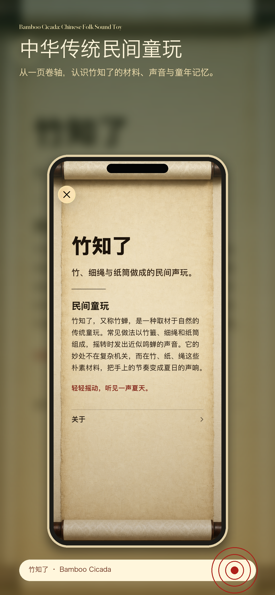
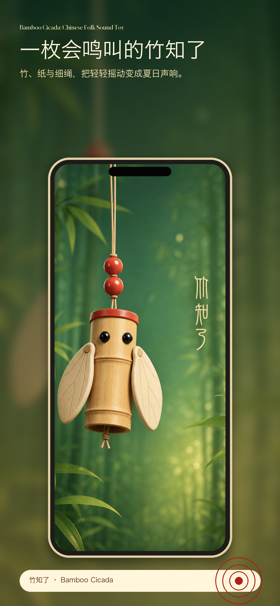
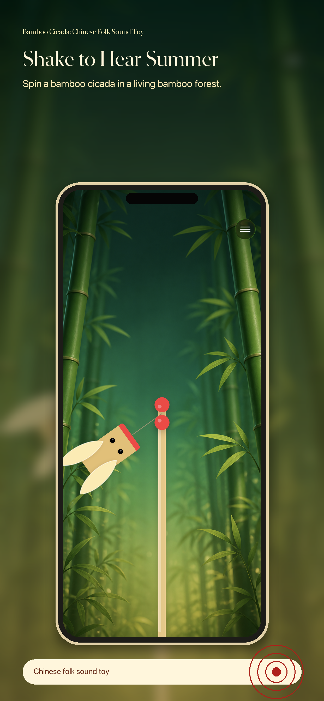
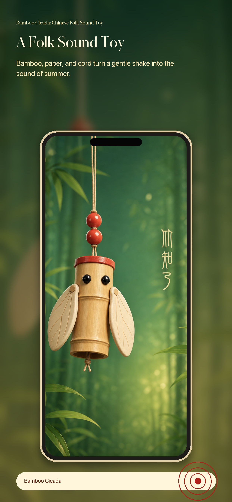
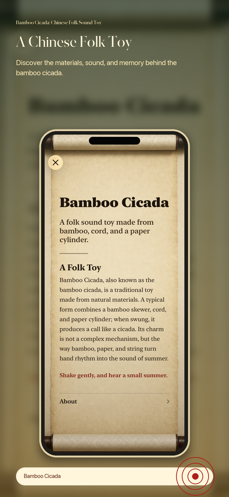

启动、旋转、加速都有不同触感，让节奏不只被听见，也能被手感感到。
Start, spin, and speed changes produce tactile pulses that make the rhythm feel alive.
把竹、纸、细绳做成的民间童玩装进 iPhone。轻轻摇动，听见鸣蝉声，也感到跟随节奏的震动反馈。
Bring a traditional Chinese folk sound toy to iPhone. Shake gently, hear a cicada-like call, and feel haptic feedback pulse with the rhythm.
竹知了，也叫竹蝉，由竹签、细绳和纸筒简单制成。摇转时发出如蝉鸣般的声响。这个 App 通过动作感应、声音和触觉反馈，把这份朴素的夏日声响带到你的手机上。
The bamboo cicada is made from bamboo sticks, cord, and a paper cylinder. When swung, it produces a cicada-like call. This app brings that simple summer sound to your iPhone with motion sensing, audio, and haptic feedback.

启动、旋转、加速都有不同触感，让节奏不只被听见，也能被手感感到。
Start, spin, and speed changes produce tactile pulses that make the rhythm feel alive.
声音会随摇动节奏变化，像手里真的转着一个竹知了。
The sound responds to motion rhythm, like a small bamboo toy turning in your hand.
以卷轴风格介绍材料、玩法和民间童玩背景，适合亲子与课堂展示。
A scroll-inspired introduction explains the materials, play pattern, and folk background.
摇一摇听见蝉鸣，指尖感受震动节奏，一卷介绍带你认识这项中华传统民间童玩。
Shake to hear the cicada song, feel the haptic rhythm in your hand, and discover this traditional Chinese folk toy.



